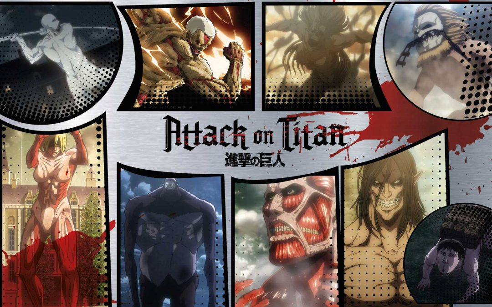

Introducción
Ataque a los Titanes (título original: Shingeki no Kyojin ) es una aclamada serie de manga y anime japonesa creada por Hajime Isayama. Su historia, que se desarrolla en un mundo post-apocalíptico, sigue a la humanidad en su lucha por la supervivencia contra los Titanes, gigantescas criaturas que devoran personas.
Datos Clave
- Murallas: María, Rose y Sina.
- Facciones: Cuerpo de Exploración y Guarnición.
- Exploración: expediciones extramuros.
- Guarnición: defensa de murallas.
- Atmosfera: Distopía y supervivencia.
Comparativa Rápida — Los 9 Titanes
Nombre, poder y ubicación (Paradis o Liberio).
| Los Nueve Titanes. | ||
|---|---|---|
| Nombre del Titán | Poder / Rasgo | Ubicación |
| Titán Fundado | Control de eldianos | Paradis |
| Titán de Ataque | Adaptación/visión | |
| Titán Colosal | Tamaño masivo | |
| Titán Acorazado | Coraza endurecida | Liberio |
| Titán Bestia | Lanzamiento y control | |
| Titán Mandíbulas | Velocidad / mordida | |
| Titán Hembra | Versátil / endurecimiento | Paradis |
| Titán de Carga | Resistencia / movilidad | Liberio |
| Titán Martillo de Guerra | Construcciones de endurecimiento | Paradis |